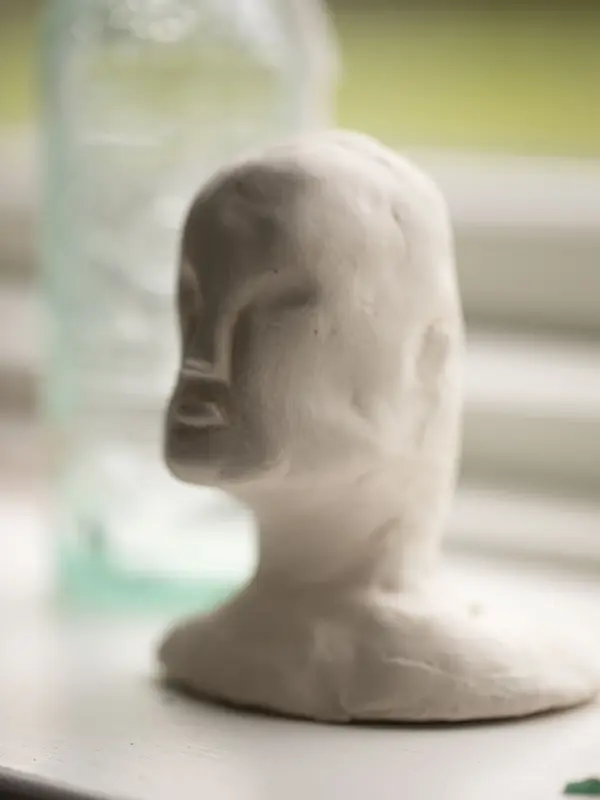
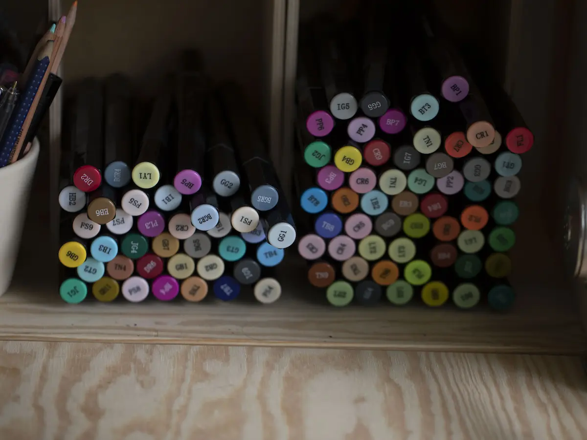
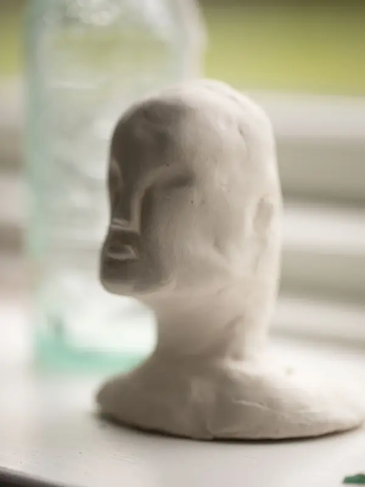
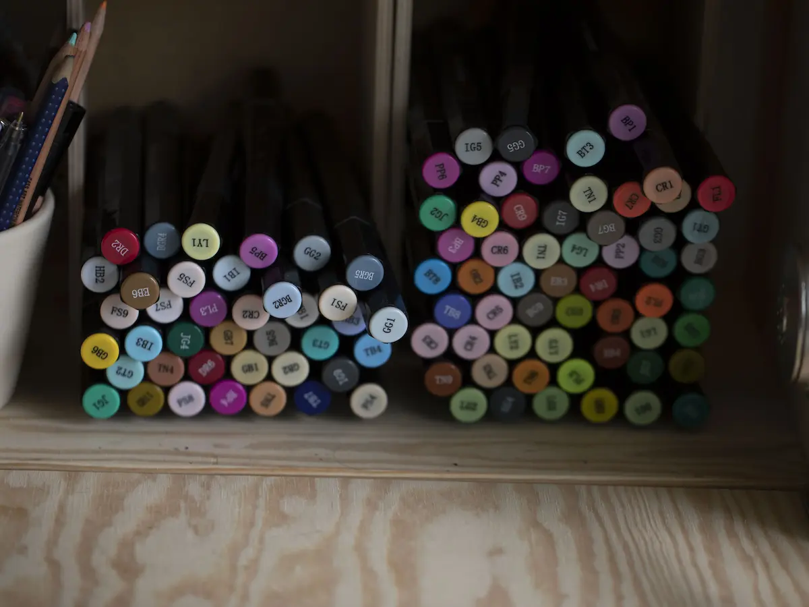

Amalie Sckerl Hansen
Konstner

Information
Denne video handler om en pige vid navn Amalie Sckerl Hansen. Hun er 23 år og arbejder lige nu som barista i Espresso House. Tidligare har hun varit på en dsignhøgskole. Hun begynt som andre børn at tegne når hun var cirka 2-3 år og siden pågik det genom hele folkeskolen. Hun blev bare vid med at tegne genom hele hendes barndom. Når hun gik på efterskole gik det up for hende at hun ville in i animationsindustrin. Hun begyndt at søgt rundt om hvad det indebar at bli en god konstner. Man skal ikke vare bang at experimentere med hvordan du ser verlden på og den måge du udtryker dig på. Man skal bare låte tøjlerne vare frie og bare lave noglet.
Konst for hun betyder hvordan man ser verlden, selvudtryk, hvordan du ser på dig selv som person. Alle mennsker har sin egen stil og tolker verden på forskellige måder.

 


